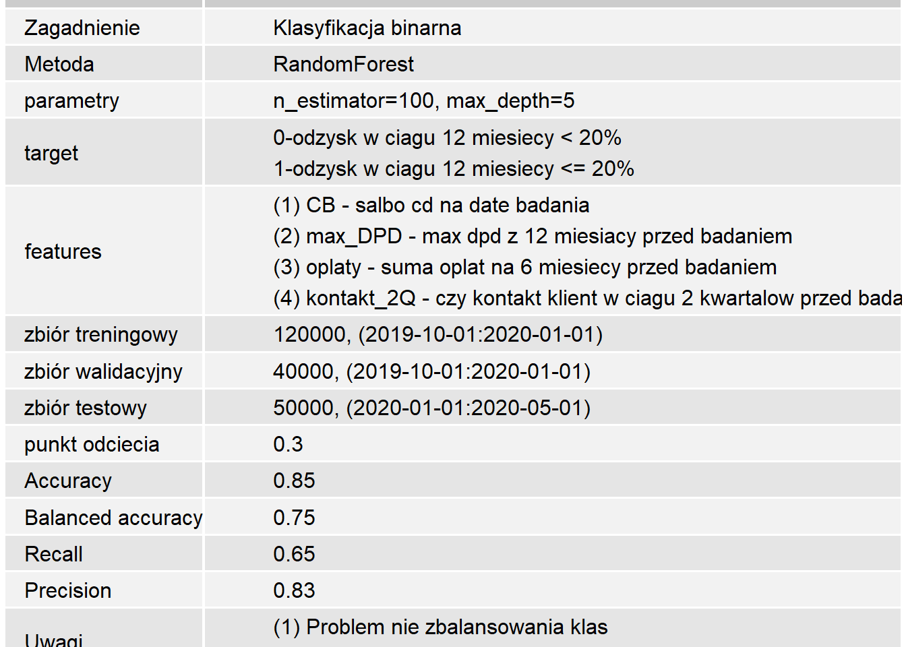

Dokumentacja modeli
1
Dziennik modeli
2
Modele
2.1
DEBT SALES
2.1.1
v.0.1 PL
2.1.2
v.0.1 EN
2.1.3
v.0.2 PL
2.1.4
v.0.2 EN
2.1.5
v.0.3 PL
2.1.6
v.0.3 EN
2.2
EWS
2.2.1
v.0.1 PL
2.2.2
v.0.1 EN
2.2.3
v.0.2 PL
2.2.4
v.0.2 EN
2.2.5
v.0.3 PL
2.2.6
v.0.3 EN
2.3
OCR ONE PAGER
2.3.1
v.0.1 PL
2.3.2
v.0.1 EN
2.3.3
v.0.2 PL
2.3.4
v.0.2 EN
2.3.5
v.0.3 PL
2.3.6
v.0.3 EN
2.4
RECOVERY
2.4.1
v.0.1 PL
2.4.2
v.0.1 EN
2.4.3
v.0.2 PL
2.4.4
v.0.2 EN
2.4.5
v.0.3 PL
2.4.6
v.0.3 EN
2.5
WOLUMENY CKK
2.5.1
v.0.1 PL
2.5.2
v.0.1 EN
2.5.3
v.0.2 PL
2.5.4
v.0.2 EN
2.5.5
v.0.3 PL
2.5.6
v.0.3 EN
3
Data Science book
3.1
Metody nadzorowane
3.1.1
Regresja
3.1.2
Ensambled models
3.1.3
Szeregi czasowe
3.1.4
Sieci nauronowe
3.2
Metody nienadzorowane
3.2.1
k-means
3.2.2
DBSCAN
3.2.3
Mieszanki GAussowskie
3.3
Miary
3.3.1
Korelacje
3.3.2
Regresja
3.3.3
Klasyfikacja
3.4
Data preprocessing
3.4.1
Imputacja danych
3.4.2
Wartości odstające
3.4.3
Encoding
3.4.4
Preprocessing obrazu
3.4.5
Preprocessing dzwięku
3.4.6
Preprocessing tekstu
3.4.7
Redukcja wymiaru
Published with bookdown
Dokumentacja modeli
Chapter 2
Modele
2.1
DEBT SALES
2.1.1
v.0.1 PL
Karta modelu

2.1.1.0.1
Wstęp
2.1.1.0.1.1
Cel biznesowy
2.1.1.0.1.2
Narzędzie i źródła danych
2.1.1.0.1.3
Architektura modelu
2.1.1.1
Analiz zmiennych
2.1.1.1.1
Metodyka
2.1.1.1.2
Zmienna 1
2.1.1.1.3
Zmienna 2
2.1.1.1.4
Zmienna 3
2.1.1.1.5
Zmienna 4
2.1.1.1.6
Korelacje zmiennnych
2.1.1.2
Budowa modelu
2.1.1.2.1
Budowa zbiorów
2.1.1.2.2
Metodyka
2.1.1.2.3
Wyniki
2.1.2
v.0.1 EN
2.1.3
v.0.2 PL
2.1.4
v.0.2 EN
2.1.5
v.0.3 PL
2.1.6
v.0.3 EN
2.2
EWS
2.2.1
v.0.1 PL
2.2.2
v.0.1 EN
2.2.3
v.0.2 PL
2.2.4
v.0.2 EN
2.2.5
v.0.3 PL
2.2.6
v.0.3 EN
2.3
OCR ONE PAGER
2.3.1
v.0.1 PL
2.3.2
v.0.1 EN
2.3.3
v.0.2 PL
2.3.4
v.0.2 EN
2.3.5
v.0.3 PL
2.3.6
v.0.3 EN
2.4
RECOVERY
2.4.1
v.0.1 PL
2.4.2
v.0.1 EN
2.4.3
v.0.2 PL
2.4.4
v.0.2 EN
2.4.5
v.0.3 PL
2.4.6
v.0.3 EN
2.5
WOLUMENY CKK
2.5.1
v.0.1 PL
2.5.2
v.0.1 EN
2.5.3
v.0.2 PL
2.5.4
v.0.2 EN
2.5.5
v.0.3 PL
2.5.6
v.0.3 EN